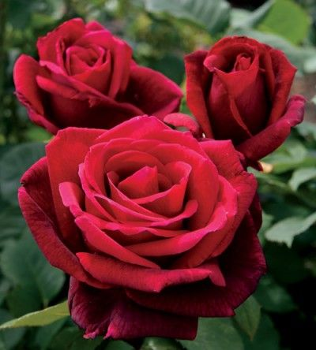
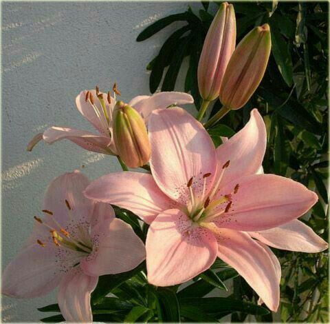
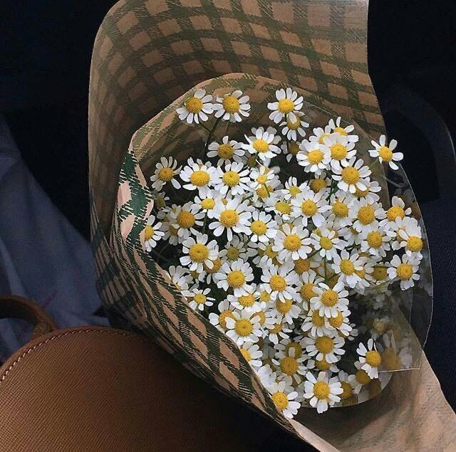
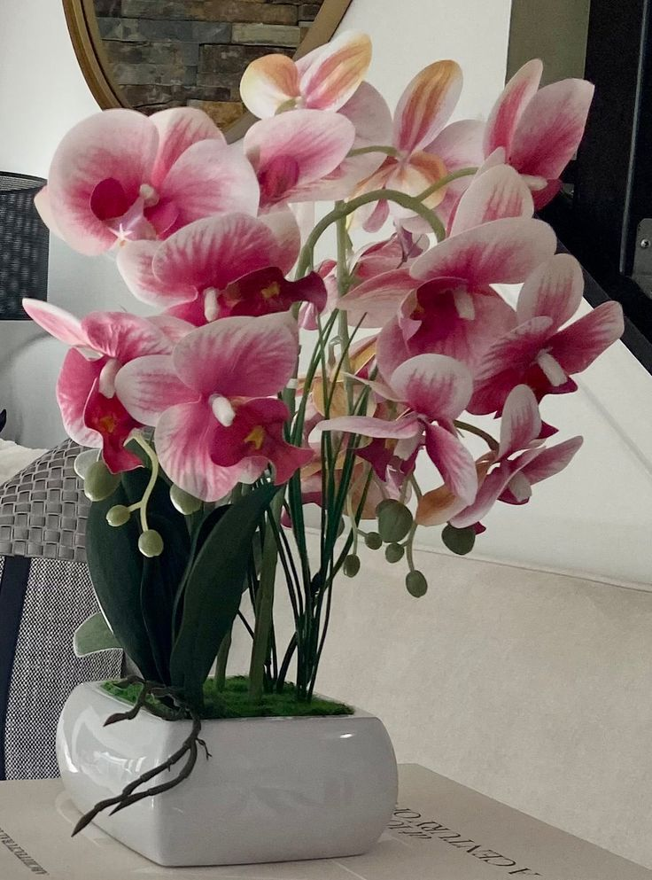
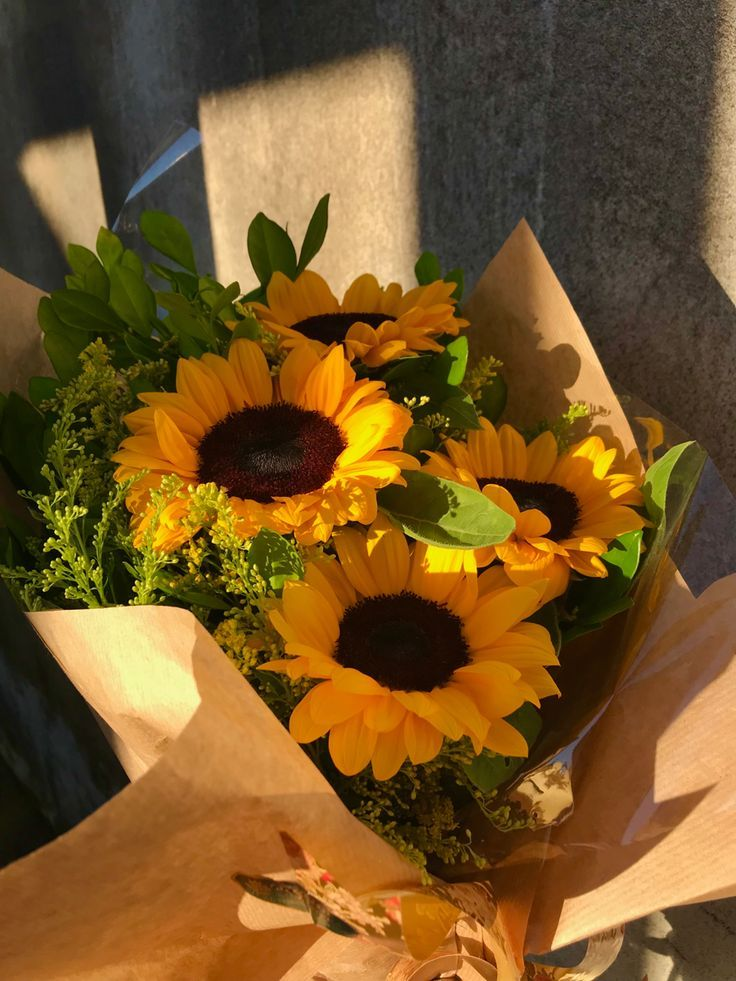
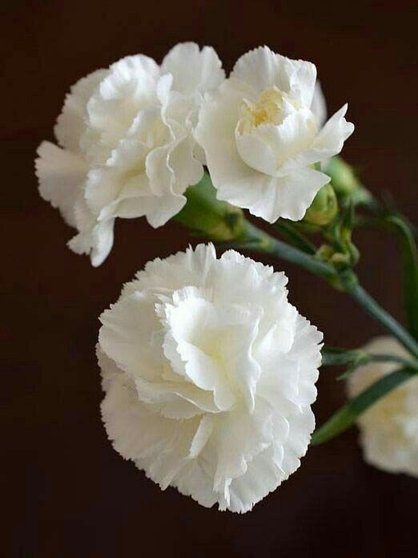
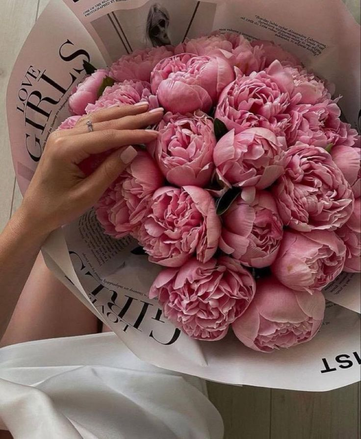
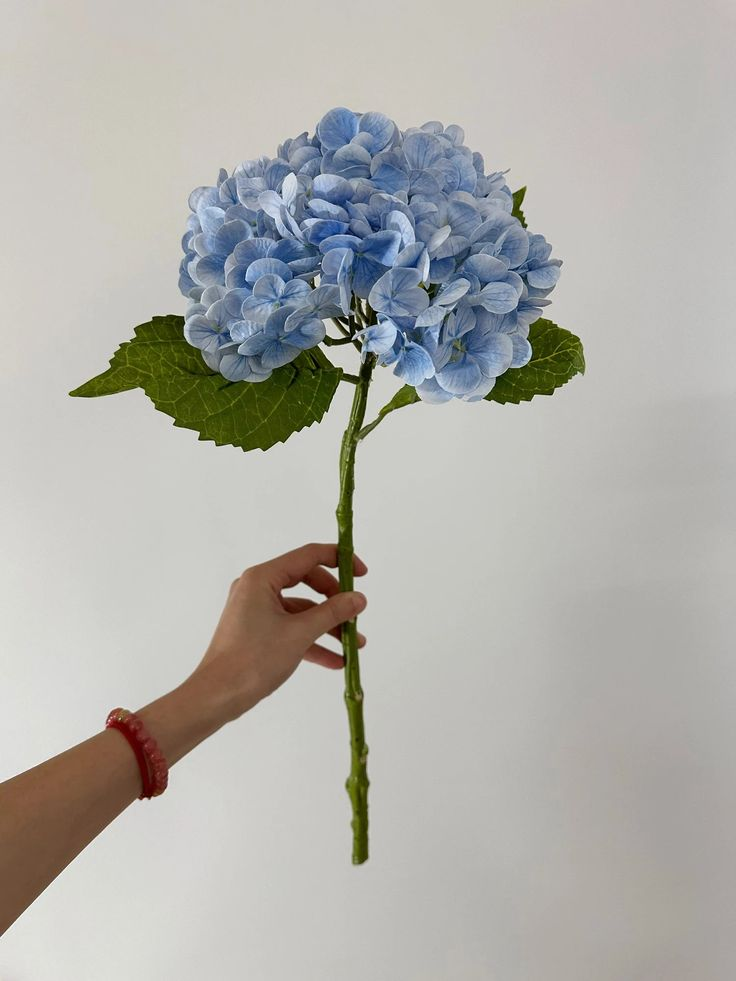
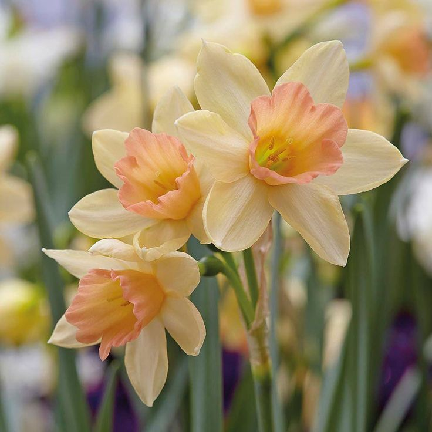

El encanto de las rosas: variedades y cuidados.
Descubre la belleza y diversidad de las rosas en nuestro catálogo. Aprende cómo cuidar cada variedad para que florezcan en tu jardín.

Descubre la belleza y diversidad de las rosas en nuestro catálogo. Aprende cómo cuidar cada variedad para que florezcan en tu jardín.

Acompáñanos en un viaje a través de las flores que cada estación nos regala. Aprende cuáles son las flores de temporada y cómo pueden realzar tu hogar. .

Eleva cualquier espacio con nuestros arreglos florales de diseño. Cada composición es una obra de arte, combinando texturas, fragancias y colores.
| Tipo de flor | Descripcion |
|---|---|
|  | Las rosas son sinónimo de amor y elegancia. Disponibles en una amplia gama de colores, son perfectas para expresar tus emociones, ya sea en aniversarios, cumpleaños o cualquier ocasión especial. Cada rosa transmite un mensaje único y personal. |
 |
Los tulipanes traen consigo la frescura y la alegría de la primavera. Con sus colores vibrantes, son ideales para llenar de vida cualquier espacio. Perfectos para celebraciones o simplemente para sorprender a alguien especial. |
|  | Con su imponente belleza y fragancia cautivadora, los lirios son flores que deslumbran en cualquier arreglo. Representan pureza y renovación, haciéndolos ideales para bodas, aniversarios o momentos de celebración. |
|  | Sencillas y encantadoras, las margaritas evocan frescura y alegría. Su simplicidad las convierte en el complemento perfecto para cualquier ambiente informal o relajado. Son ideales para expresar inocencia y sinceridad. |
|  | Las orquídeas destacan por su exótica elegancia y sofisticación. Perfectas para momentos especiales o para decorar espacios con un toque lujoso. Su belleza delicada y duradera las convierte en una elección única. |
|  | Los girasoles, con su radiante color amarillo, son el símbolo perfecto de la felicidad y la energía. Estos grandes y alegres flores llenarán cualquier espacio de luz y positivismo. Ideales para celebraciones al aire libre o decoraciones veraniegas. |
|  | Con su aroma sutil y durabilidad, los claveles son perfectos para todo tipo de arreglos florales. Disponibles en varios colores, cada uno con su propio significado, son una opción versátil para transmitir emociones. |
|  | Las peonías, con sus pétalos suaves y delicados, son el epítome del romance y la belleza. Perfectas para ocasiones especiales como bodas o aniversarios, su presencia en cualquier arreglo asegura elegancia y encanto. |
|  | Las hortensias impresionan con sus voluminosos racimos de pequeñas flores. Sus tonalidades de azul, rosa y púrpura agregan un toque de sofisticación y son ideales para crear arreglos florales de gran impacto. |
|  | Los narcisos traen consigo la esencia de la primavera, simbolizando nuevos comienzos y esperanza. Sus vibrantes pétalos amarillos son ideales para decorar hogares y eventos con un toque fresco y lleno de vida. Estas breves descripciones están diseñadas para atraer a los clientes al destacar la belleza y el simbolismo de cada flor de manera concisa y atractiva. |
La florería más reconocida del sector y no es por echarnos flores
Miles de personas han confiado en nosotros, hacemos hermosos tus días especiales
En la mejor zona, siempre a tu alcance